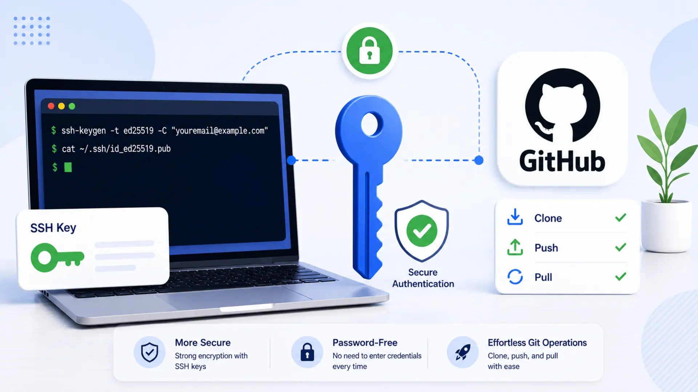

How to Generate an SSH Key and Add It to GitHub for Secure Git Operations

GitHub requires authentication for performing Git operations like cloning, pushing, and pulling repositories. While passwords were previously used, GitHub now recommends SSH keys for secure and seamless authentication.
In this article, you'll learn how to generate an SSH key, add it to GitHub, and configure your system to authenticate using SSH. By the end, you'll be able to securely interact with your GitHub repositories without entering credentials repeatedly.
📚 Table of Contents
1. Introduction
When working with GitHub, you often need to perform Git operations such as cloning repositories, pushing changes, and pulling updates. Every interaction between your local machine and GitHub requires authentication to ensure security.
Previously, GitHub allowed password authentication for Git operations, but it has deprecated this method due to security risks. Instead, it now enforces more secure alternatives like SSH keys or personal access tokens (PATs). Among these, SSH keys are one of the most convenient and secure ways to authenticate without manually entering credentials every time.
Once configured, SSH authentication enables a secure, password-free connection between your system and GitHub, allowing you to clone repositories, push commits, and manage your code effortlessly.
2. What is an SSH Key and Why Use It for GitHub?
🔹 What is an SSH Key?
An SSH (Secure Shell) key is a cryptographic key pair used for secure authentication between your local system and a remote server, such as GitHub. Instead of using a username and password for authentication, SSH keys enable a more secure and seamless login process.
An SSH key pair consists of:
- Private Key (id_ed25519) - Stored securely on your computer and never shared.
- Public Key (id_ed25519.pub) - Shared with remote servers (e.g., GitHub) to authenticate your identity.
When you attempt to connect to GitHub via SSH, the server verifies your private key using the corresponding public key. If they match, you are granted access without needing to enter a password.
🔹 Why Use SSH Keys for GitHub?
GitHub previously allowed users to authenticate using passwords for Git operations (e.g., cloning, pushing, pulling). However, due to security concerns, GitHub has removed password-based authentication and now recommends SSH keys or Personal Access Tokens (PATs) instead.
Here's why SSH keys are preferred:
- Enhanced Security - SSH keys use strong encryption, making them much more secure than passwords. Even if someone intercepts the authentication request, they cannot derive the private key.
- No Need for Passwords - Once configured, SSH authentication does not require entering your username and password every time you interact with GitHub.
- Faster and Seamless Authentication - SSH connections are automated, making Git operations quicker compared to entering credentials manually.
- GitHub Requirement - Since August 2021, GitHub no longer supports password authentication for Git operations, making SSH keys one of the best alternatives.
🔹 How SSH Authentication Works in GitHub (Example)
Let's say you want to clone a GitHub repository using SSH. Instead of using an HTTPS URL and entering a password, you would use an SSH URL like this:
Without SSH (Using HTTPS, Requires Credentials Each Time)
When running this command, GitHub will ask for your username and password (or personal access token) every time you push or pull code.
With SSH (No Credentials Needed After Setup)
💡 If your SSH key is correctly configured, GitHub will authenticate you automatically, and the repository will be cloned without asking for credentials.
3. Generating an SSH Key Pair
To securely authenticate with GitHub, you need to generate an SSH key pair — a cryptographic key combination that consists of:
- Private Key (id_ed25519) - Stored securely on your local machine; never share this key.
- Public Key (id_ed25519.pub) - Added to your GitHub account to authenticate your identity.
GitHub recommends using the Ed25519 algorithm instead of RSA because it is more secure, faster, and generates smaller keys.
🔍 Checking for Existing SSH Keys
Before generating a new SSH key, check if you already have one on your system. Open a terminal (Command Prompt, Git Bash, or macOS/Linux Terminal) and run:
For Windows (PowerShell):
This will list all files in the .ssh directory. If you see files like id_rsa and id_rsa.pub, an SSH key already exists.
✅ Example Output (If SSH Keys Exist):
🔴 If You Already Have an SSH Key
- If id_ed25519 and id_ed25519.pub exist, you can use them or generate a new key if needed.
- If you prefer a new key, move the existing one to a backup location using:
⚡ Creating a New SSH Key
To generate an SSH key using the Ed25519 algorithm, run the following command:
Explanation of Flags:
- -t ed25519 → Specifies the Ed25519 algorithm (recommended by GitHub).
- -C "your-email@example.com" → Adds an identifying comment (your GitHub email).
Example Output:
Simply press Enter to accept the default location (~/.ssh/id_ed25519 for Linux/macOS or %USERPROFILE%\.ssh\id_ed25519 for Windows).
🔴 If You Already Have a Key with the Same Name
You will see a message like this:
Type n (No) to avoid losing your existing key. If you want to generate a new key, provide a different filename like:
This will create a new key pair (id_ed25519_new and id_ed25519_new.pub).
🔑 Adding a Passphrase (Optional)
After choosing a location, you will be prompted to enter a passphrase:
💡 What is a Passphrase?
A passphrase adds an extra layer of security to your SSH key. Even if someone gets your private key, they cannot use it without the passphrase.
- ✔ Strong Security → Use a passphrase for better protection.
- ❌ Convenience → If you don't want to enter a passphrase every time, leave it empty.
If you set a passphrase, you must enter it every time you use SSH, unless you add it to the SSH agent.
✅ Example of a Complete SSH Key Generation Process
Command
Expected Output:
Now, your SSH key is successfully created and saved in ~/.ssh/
4. Adding the SSH Key to the SSH Agent
Once you've generated an SSH key pair, you need to add the private key to the SSH agent. The SSH agent is a background program that stores your private key in memory so that you don't have to enter your passphrase every time you authenticate with GitHub.
Without adding your key to the SSH agent, you might have to enter the passphrase manually every time you push, pull, or clone a repository. Let's go step by step to set it up.
📌 Step 1: Start the SSH Agent
Before adding your key, ensure the SSH agent is running. Use the following command to start it:
🔹 For macOS & Linux:
Example Output:
This confirms that the SSH agent is running in the background.
🔹 For Windows (Git Bash or WSL):
If you're using Git Bash or Windows Subsystem for Linux (WSL), run:
If you're using PowerShell, start the SSH agent manually:
To ensure the SSH agent starts automatically in future PowerShell sessions, run:
📌 Step 2: Add Your SSH Key to the Agent
Now, add your private key (id_ed25519) to the SSH agent.
🔹 Standard Command (For macOS, Linux, Git Bash, WSL, PowerShell)
Example Output (if successful):
🔹 If You Used a Different Key Name
If you created an SSH key with a custom filename, specify the exact path. For example:
🔹 If You Get a "Could not open a connection to your authentication agent" Error
Try running:
Then re-run:
📌 Step 3: Verify the SSH Key is Added
To confirm that your key was added successfully, run:
If your key is properly added, you will see output like:
If no identities are listed, try adding the key again using:
🛠 Troubleshooting Common Issues
❌ Error: Could not open a connection to your authentication agent
Solution: Start the SSH agent using eval "$(ssh-agent -s)" then try adding your key again.
❌ Error: Permission denied (publickey) when connecting to GitHub
Solution: Ensure your key is added to GitHub. You can also check if your key is loaded with:
5. Adding the SSH Key to GitHub
Now that you have generated your SSH key pair and added the private key to the SSH agent, the next step is to add the public key to your GitHub account. This allows GitHub to recognize your system and grant access to repositories without requiring a password.
Let's go step by step.
📌 Step 1: Copying the Public Key
The public key is the one you need to upload to GitHub. Follow these steps to copy it:
🔹 Linux & macOS
Run the following command in your terminal:
This will display your public key. Copy the entire output.
Alternatively, use:
Works only on macOS, copies the key directly to your clipboard.
🔹 Windows (PowerShell)
This copies the public key to your clipboard.
🔹 Windows (Git Bash)
Example Output (Public Key Format)
Important: Copy the entire key, including ssh-ed25519 at the beginning.
📌 Step 2: Adding the Key to GitHub
🔹 Navigate to GitHub SSH Settings
1️⃣ Log in to GitHub → https://github.com
2️⃣ Click on Your Profile Picture (top-right corner) → Settings
3️⃣ On the left sidebar, click SSH and GPG keys
4️⃣ Click the New SSH Key button
🔹 Add the Public Key
- Title: Enter a recognizable name (e.g., "My Laptop" or "Work PC").
- Key Type: Select Authentication Key.
- Key: Paste your public key (id_ed25519.pub).
- Click Add SSH Key.
✅ Example:
| Field | Value |
|---|---|
| Title | My Laptop |
| Key Type | Authentication Key |
| Key | ssh-ed25519 AAAAC3NzaC1lZDI1NTE5AAADEXAMPLEKEY your-email@example.com |
After clicking Add SSH Key, GitHub will save your key.
📌 Step 3: Testing the SSH Connection
Now, let's verify that the SSH key works by connecting to GitHub.
Run the following command:
Expected Output (if successful):
This confirms that your key is working, and you can now clone, push, and pull repositories securely.
🛠 Troubleshooting Common Issues
❌ Error: Permission denied (publickey)
Solution: Ensure your SSH key is added to GitHub. Verify that your SSH agent has the key loaded by running ssh-add -l. If no keys are listed, add it again with ssh-add ~/.ssh/id_ed25519.
6. Configuring Git to Use SSH
Now that we have added our SSH key to GitHub, we need to configure Git to use SSH for all GitHub interactions. This ensures that Git does not default to HTTPS authentication, which requires a password or access token.
Let's set up Git correctly for SSH authentication.
🔹 1. Set Global Git User Information
Before using Git, it's essential to configure your name and email, which are used to identify you in commits.
Run the following commands:
Replace "John Doe" and "johndoe@example.com" with your actual name and email address.
Verify your settings:
✅ Expected Output:
🔹 2. Configure Git to Always Use SSH for GitHub
By default, Git may use HTTPS when cloning repositories. To ensure Git always uses SSH instead of HTTPS, run:
What does this do?
🔄 This command automatically replaces HTTPS URLs with SSH URLs when interacting with GitHub repositories.
Example: Before & After Running This Command
🔴 Before (https:// used)
Git will ask for a username and access token.
🟢 After (git@github.com: used)
Git automatically converts it to:
✅ Now, Git uses SSH without requiring credentials!
Verify Your Configuration:
Expected Output:
7. Cloning a Repository Using SSH
Once your SSH key is added to GitHub and Git is configured to use SSH, you can securely clone repositories without entering a username or password. Cloning a repository means creating a local copy of a project from GitHub so you can work on it.
Let's go step by step on how to clone a repository using SSH.
📌 1. Find the SSH URL of the Repository
Before cloning, you need to get the SSH URL of the repository you want to clone.
🔹 Steps to Get the SSH URL on GitHub
1️⃣ Go to GitHub and open the repository you want to clone.
2️⃣ Click on the Code button (🔽 green button at the top right).
3️⃣ Select the SSH tab.
4️⃣ Copy the SSH URL.
Example SSH URL format:
📌 2. Clone the Repository Using SSH
Now, open a terminal (Command Prompt, Git Bash, or macOS/Linux Terminal) and run:
Replace your-username/repository.git with the actual repository name.
✅ Example Command:
Expected Output (If Cloning is Successful)
Now, you have successfully cloned the repository into a local folder.
📌 3. Verify the Cloned Repository
After cloning, navigate to the cloned directory and check the remote URL.
✅ Expected Output (If Using SSH):
This confirms that SSH is being used for Git operations.
8. Pushing Code to GitHub Using SSH
After cloning a repository using SSH, you can modify files, commit changes, and push them back to GitHub. Pushing code means uploading your local changes to the GitHub repository so that they are saved and shared with others (or just yourself in a private repo).
Let's go step by step.
📌 1. Make Changes in the Repository
After cloning a repository, navigate to the repository folder:
Now, let's create or modify a file.
🔹 Create a new file (If example.txt):
📌 2. Check the Git Status
Run the following command to check what has changed:
✅ Expected Output:
This means example.txt is new and not yet tracked by Git.
📌 3. Add the File to Staging
To include the file in the next commit, run:
To add all changed files at once:
Run git status again, and now you should see:
📌 4. Commit the Changes
Now, commit the staged changes with a message:
✅ Expected Output:
📌 5. Push the Changes to GitHub
Now, let's push the changes using SSH:
If your branch is master, replace main with master.
✅ Expected Output:
🎉 Your changes are now uploaded to GitHub!
📌 6. Verify the Changes on GitHub
Go to your repository on gitHub.com, refresh the page, and you should see: If example.txt added with the commit message "Added example.txt".
9. Managing Multiple SSH Keys (Optional)
If you work with multiple GitHub accounts (e.g., personal and work) or need SSH access to multiple services (e.g., GitHub, GitLab, Bitbucket), you may need to manage multiple SSH keys. By default, Git uses one SSH key located at ~/.ssh/id_ed25519, but if you need separate keys for different accounts, you must configure SSH to handle them properly.
Let's go step by step on how to manage multiple SSH keys.
📌 1. Generate Multiple SSH Keys
To create different SSH keys for different accounts, generate a new key for each:
✅ Now, you have two key pairs:
- Work Account: id_ed25519_work and id_ed25519_work.pub
- Personal Account: id_ed25519_personal and id_ed25519_personal.pub
📌 2. Add the SSH Keys to GitHub
Each public key (.pub file) must be added to GitHub → Settings → SSH and GPG Keys under the respective account.
🔹 Copy the Public Key for Work:
Paste it into GitHub (Work Account) → SSH Keys.
🔹 Copy the Public Key for Personal:
Paste it into GitHub (Personal Account) → SSH Keys.
📌 3. Configure SSH to Use the Correct Key
Since we have multiple SSH keys, we need to tell SSH which key to use for which GitHub account. This is done using the SSH config file.
🔹 Open the SSH Config File:
🔹 Add the Following Configuration:
Explanation of the Config File:
- Host github-work → A nickname for the work account.
- Host github-personal → A nickname for the personal account.
- IdentityFile ~/.ssh/id_ed25519_work → Specifies which private key to use for work.
- IdentityFile ~/.ssh/id_ed25519_personal → Specifies which private key to use for personal use.
🔹 Save and exit (CTRL + X, then Y, then Enter).
📌 4. Use the Correct SSH Key for Each Repository
Now, when cloning repositories, use the custom SSH alias instead of github.com:
🔹 Clone Work Repository (Using Work Key)
🔹 Clone Personal Repository (Using Personal Key)
📌 5. Updating Existing Repositories to Use the Correct SSH Key
If you already have a repository cloned with github.com, update it to use the correct custom SSH alias.
🔹 Check Current Remote URL:
🔹 Change Remote URL to Work Key:
🔹 Change Remote URL to Personal Key:
Now, every time you push or pull, Git will automatically use the correct SSH key.
10. Conclusion
Setting up SSH authentication for GitHub is an essential step toward a secure, efficient, and password-free workflow. By replacing traditional HTTPS authentication with SSH, you eliminate the need to repeatedly enter credentials, while also improving security through encrypted key-based authentication. This guide walked you through generating an SSH key pair, adding it to GitHub, configuring Git to use SSH, and managing multiple SSH keys when working with different accounts. Additionally, we covered cloning repositories, pushing code securely, and troubleshooting common SSH issues to ensure a smooth experience. With this setup in place, Git operations become seamless, allowing you to focus on writing code rather than dealing with authentication hurdles. As GitHub continues to emphasize security best practices, SSH authentication remains the most reliable method for interacting with repositories, making your development workflow both safer and more convenient. Now, you're fully equipped to use SSH for all GitHub interactions, ensuring a frictionless coding experience.

Technical Stacks
 Git
Git GitHub
GitHub
References
-
GitHub Docs:
Connecting to GitHub with SSH
-
GitHub Docs:
About SSH
-
GitHub Docs:
Adding a new SSH key